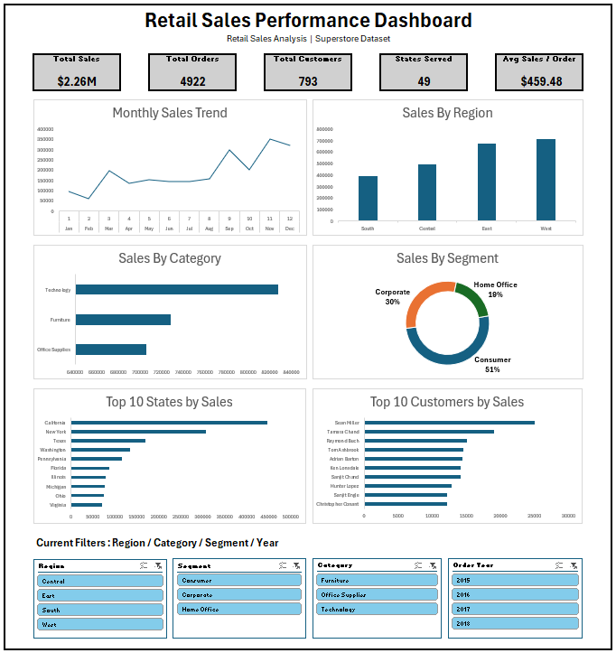

FEATURED PROJECT · 01
Retail Sales Performance Dashboard
An interactive Excel dashboard analyzing 9,801 sales records to identify regional, category, segment, geographic and time-based performance trends.
Key analysis
- Regional and geographic sales performance
- Category and segment contribution
- Monthly and yearly sales trends
- Top-performing cities and business segments